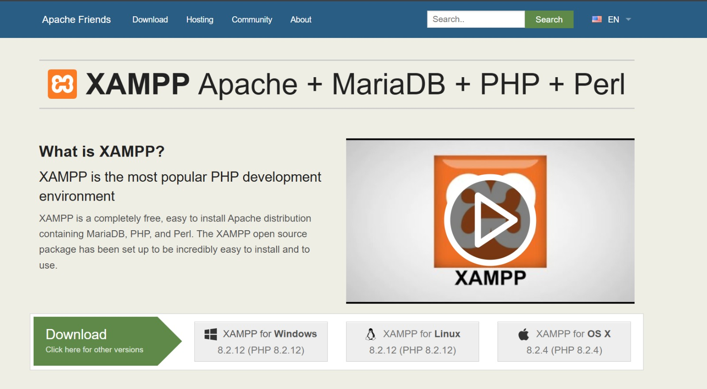
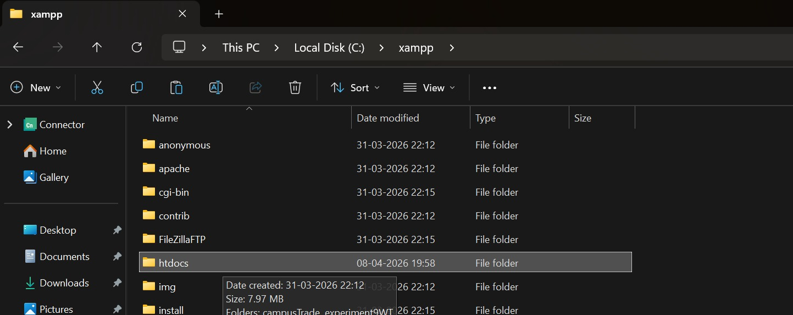
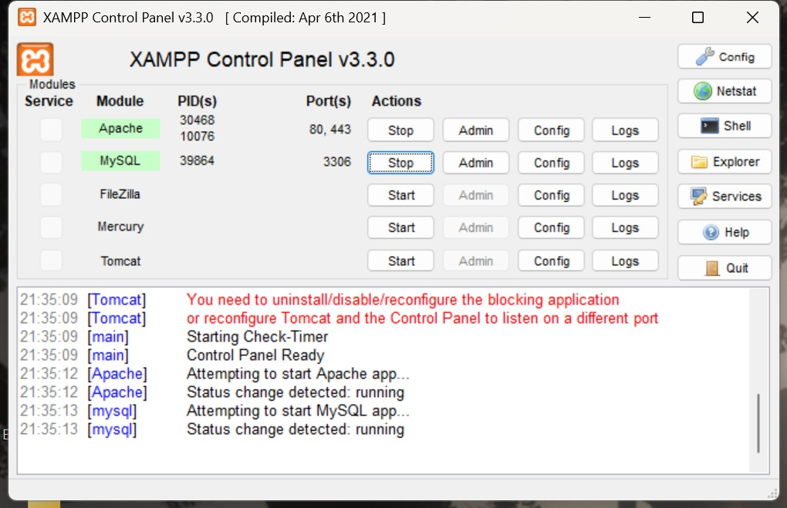
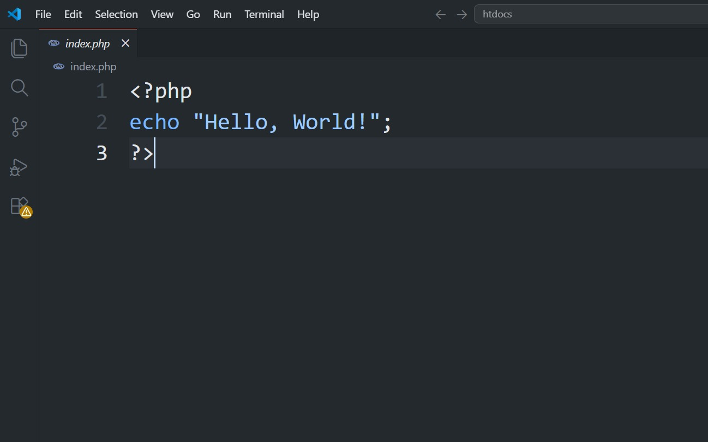
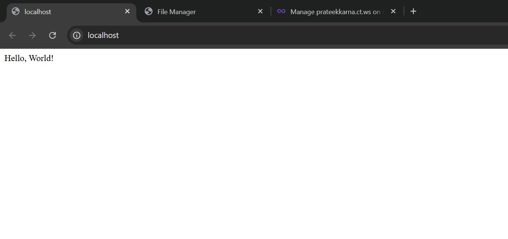

PHP Integration & Local Deployment
A complete step-by-step guide for beginners
Learn PHP Integration & Local Deployment
This guide shows you how to:
- Set up PHP on your computer
- Create and run PHP files
- Connect PHP with HTML
- Run projects locally on your machine
📋 5 Main Steps:
- Step 1: Install PHP and tools
- Step 2: Create PHP files
- Step 3: Mix PHP with HTML
- Step 4: Run on your computer
- Step 5: Common fixes & tips
🎯 Prerequisites:
- Basic knowledge of HTML and CSS
- A text editor (VS Code, Sublime Text, etc.)
- PHP installed on your computer
- A web server (Apache, Nginx, or built-in PHP server)
Setting Up Your Development Environment

What is PHP?
PHP runs on your computer's server side. HTML runs in the browser. We're setting up PHP first.
What to Install:
- PHP - The language for server-side code
- Code Editor - VS Code or Sublime Text
- Web Server - PHP built-in server (recommended)
Creating and Configuring PHP Files

How to Create a PHP File
PHP files look like text files but run on the server. Create a new file and name it
index.php.
Basic PHP File Structure:
Create a file named index.php with the following structure:
Project Structure Example:
Integrating PHP with HTML

How PHP & HTML Work Together
PHP: Runs on the server → HTML: Sent to browser → Result: User sees a webpage
Example: Displaying Dynamic Content
Key PHP Tools:
- echo - Print text on the page
- Variables - Store data ($name = "John")
- if/else - Make decisions
- loops - Repeat code
Running Your Application Locally

Run Your Project Locally
Use the built-in PHP server to test your project on your computer before uploading it.
Using PHP Built-in Server (Easiest Method):
Using Apache Server:
- Place your project in Apache's root directory (htdocs)
- Start Apache using Apache Control Panel or command line
- Access your site via
http://localhost/your-project
Troubleshooting & Best Practices

Quick Fixes
Problem 1: "PHP is not recognized"
Fix: PHP is not installed or not in PATH. Download PHP and add it to your computer's settings.
Problem 2: "Port 8000 in use"
Fix: Use a different port: php -S localhost:8001
Problem 3: "500 Error"
Fix: Check your PHP code for typos. Look at the error message.
✅ Best Practices:
- Test your code before uploading it
- Write comments to explain your code
- Use simple variable names like $name, $age
- Keep passwords out of your code
- Check what users type in (don't trust it)
- Use Git to save your work
📚 What's Next:
- Learn databases (MySQL)
- Try PHP frameworks (Laravel)
- Build forms that save data
- Add user login/signup
- Learn about website security